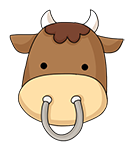
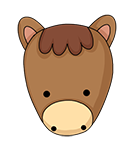

- 그림
- 물음 1
- 물음 2
- 물음 3
- 물음 4
-
-
우리 조상들은 연도를 나타낼 때, 10일을 뜻하는 십간(十干)과 12종류의 동물을 뜻하는 십이지(十二支)를 사용했습니다. 십간과 십이지를 순서대로 하나씩 짝을 지어 갑자년, 을축년, 병인년 ······ 임신년, 계유년, 갑술년, 을해년, 병자년 ······ 으로 해마다 이름을 붙이고, 그 해에 태어난 사람의 띠를 정해 왔습니다.
- 십간
- 갑
(甲) - 을
(乙) - 병
(丙) - 정
(丁) - 무
(戊) - 기
(己) - 경
(庚) - 신
(辛) - 임
(壬) - 계
(癸)
-
- 십
이
지 - 자(子)

쥐 - 축(丑)

소 - 인(寅)

호랑이 - 묘(卯)
토끼 - 진(辰)

용 - 사(巳)

뱀
- 십
이
지 - 오(午)

말 - 미(未)

양 - 신(申)
원숭이 - 유(酉)

닭 - 술(戌)
개 - 해(亥)
돼지
- 십
-
-
-
십간은 몇 년마다 반복되나요?
10년 -
십이지는 몇 년마다 반복되나요?
12년 -
평창 동계 올림픽이 열린 2018년은 ‘무술년’이고, 4년 후 동계 올림픽이 열리는 2022년은 ‘임인년’입니다. 2030년은 무슨 해인가요?
경술년 -
자신이 태어난 해의 이름은 무엇인지 알아보세요.
예2008년은 무자년, 2009년은 기축년, 2010년은 경인년, 2011은 신묘년입니다.